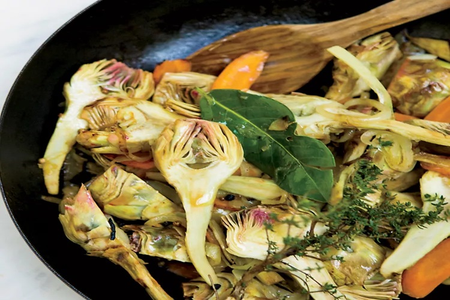

In their book Wine Food, sommelier Dana Frank and recipe developer Andrea Slonecker pair funky, bright wines with flavorful, vegetable-forward dishes. In this vegetarian version of classic French onion soup, blue cheese and oloroso sherry bring new layers of flavor and depth. Notes of toasted nuts and fruit compote in the sherry pair well with caramelized onions, and its briny acidity cuts through the richness of the cheese.
Ingredients
4 1/2 pounds mixed onions (such as 2 large yellow onions, 2 large red onions, and 2 large sweet onions), halved and thinly sliced lengthwise (about 16 cups)
2 tablespoons extra-virgin olive oil
2 tablespoons unsalted butter
1/4 cup oloroso sherry
6 cups homemade or store-bought low-sodium vegetable broth
8 thyme sprigs
1 tablespoon kosher salt, plus more to taste
3/4 teaspoon freshly ground black pepper, plus more to taste
2 teaspoons sherry vinegar
6 day-old whole-grain rustic bread slices, halved
4 ounces Stilton cheese, thoroughly chilled and thinly sliced with a wire cheese slicer or crumbled
Directions
Combine onions, oil, and butter in a stockpot over medium-high; toss together. (Tongs are a great tool to use for tossing this many onions.) Cook, stirring occasionally, until onions start to caramelize, about 20 minutes.
Reduce heat to medium, and continue to cook, stirring and scraping any browned bits from the bottom of the pot with a wooden spoon, until onions are tender and caramelized, about 25 minutes.
Add sherry, and cook, stirring to scrape up any remaining browned bits. Simmer over medium, stirring constantly, until sherry is mostly evaporated, 2 to 3 minutes.
Stir in broth, thyme, salt, and pepper. Increase heat to high, and bring to a boil. Reduce heat to medium-low, and simmer, partially covered, until flavors marry, 20 to 25 minutes.
Stir in vinegar, and cook 1 minute; add salt and pepper to taste.
Preheat oven to broil with the oven rack 6 inches from the heat.
Remove and discard thyme sprigs. Divide hot soup evenly among 6 ovenproof crocks or bowls, and place on a rimmed baking sheet.
Place 2 bread pieces on each bowl, and gently push them down until half-submerged but still at the top of the soup.
Add cheese slices (or a handful of crumbles) to each bowl. Broil until melted, bubbly, and browned in spots, 2 to 3 minutes.
Notes
The soup, cooked through step 2, will keep, covered, in the refrigerator up to 3 days. It can be frozen in an airtight container up to 3 months.
Ratatouille
Ratatouille is a mixed vegetable stew from Provence, in the south of France. It was created in Nice, France, and is a way to celebrate the harvest of late-summer vegetables in a budget-friendly dish. Ratatouille is traditionally made with tomatoes, zucchini, peppers, onions, and eggplant when they are at the peak of their season at the same time. Garlic, thyme, and basil are often added to the mix as well.
Ingredients
2 medium (1-pound) eggplants, cut into 1/2-inch pieces (about 11 cups)
3 ½ teaspoons fine sea salt (such as La Baleine), divided, plus more to taste
¾ cup mild extra-virgin olive oil, divided, plus more as needed
2 medium (8-ounce) zucchini, cut into 1/2-inch pieces (about 3 1/2 cups)
2 medium-size (8-ounce) red bell peppers, cut into 1/2-inch pieces (about 2 1/2 cups)
4 medium garlic cloves, finely chopped (about 1 tablespoon plus 1 teaspoon)
3 small beefsteak tomatoes or heirloom tomatoes (about 1 pound), cut into 1/2-inch pieces (about 2 1/2 cups)
6 to 8 (4-inch) basil sprigs, to taste
Pinch of crushed red pepper (optional)
¼ cup rosé
3 tablespoons premium extra-virgin olive oil (such as Laudemio), plus more if desired
Directions
Place eggplant pieces in a colander. Sprinkle eggplant with 2 teaspoons salt, and toss to combine. Let stand 20 minutes. Working in batches, pat eggplant dry with paper towels.
Heat 1/4 cup mild olive oil in a large, deep skillet over medium. Add eggplant and cook, stirring often, until tender but not falling apart, 12 to 15 minutes, adding additional oil as needed. Transfer eggplant to a large bowl.
Return skillet to heat over medium and add 2 tablespoons mild olive oil. Add zucchini and cook until very tender, about 10 minutes. Stir in 1/8 teaspoon salt. Transfer zucchini to the bowl with eggplant.
Return skillet to heat over medium and add olive oil. Add onions, cook until softened, about 6 to 8 minutes. Add bell peppers, olive oil, and salt, and cook until very tender, 10 to 15 minutes. Stir in garlic for 2 minutes. Transfer bell pepper mixture to the bowl with eggplant mixture.
Return skillet to heat over medium. Add tomatoes, basil sprigs, crushed red pepper (if using), remaining salt, and remaining olive oil. Cook until tomatoes break down and most juices evaporate, 10 to 15 minutes.
Stir in rosé, cook until absorbed, about 2 minutes. Return reserved eggplant mixture to skillet; cook over medium until flavors meld and mixture is creamy but textured, 12 to 15 minutes. Drizzle ratatouille with premium olive oil. Let cool to room temperature, about 30 minutes.
Season with additional salt to taste. Remove and discard basil sprigs. Serve warm or at room temperature with a drizzle of premium olive oil over each serving, if desired.
Make Ahead
Ratatouille may be stored in an airtight container in the refrigerator for up to 3 days.
Suggested Pairing
Lively Languedoc rosé - Gérard Bertrand Côte des Roses.
Braised Baby Artichokes with Tomato Coulis
This healthy, zippy Provençal classic is known as artichokes barigoule. Served over whole-grain brown rice or buckwheat couscous, it makes a lovely vegan main course.
This healthy, zippy Provençal classic is known as artichokes barigoule. Served over whole-grain brown rice or buckwheat couscous, it makes a lovely vegan main course.

Ingredients
2 lemons, halved
36 baby artichokes (3 pounds)
1/4 cup extra-virgin olive oil
6 garlic cloves, quartered lengthwise
2 carrots, thinly sliced on the bias
1 medium onion, thinly sliced
1 tablespoon thyme leaves
2 bay leaves
1 teaspoon black peppercorns
1 teaspoon coriander seeds
3/4 cup dry white wine
1/2 teaspoon salt
Fresh Tomato Coulis, for serving
Directions
Squeeze the lemons into a bowl of water. Working with 1 artichoke at a time, snap off the dark green outer leaves. Using a sharp paring knife, slice off all but 1 inch of the remaining leaves. Peel and trim the stems. Halve the artichokes, scrape out the hairy choke, and drop them into the lemon water.
In a large, nonreactive skillet, heat the olive oil. Add the garlic, carrots, onion, thyme, bay leaves, black peppercorns, and coriander seeds and cook over moderately high heat until the onion begins to soften, about 2 minutes.
Drain the artichokes and add them to the skillet. Cook until the onion is translucent, about 2 minutes longer. Add the wine and salt, cover, and cook over moderate heat until the artichokes are just tender, about 10 minutes. Discard the bay leaves.
Spoon the artichokes and their juices onto plates. Drizzle with the Fresh Tomato Coulis and serve.
Make Ahead
The cooked baby artichokes can be refrigerated for up to 2 days. Gently reheat before serving.
Suggested Pairing
Artichokes are tough to match with wine because they contain cynarin, which for most people makes wines taste overly sweet. To combat the effect, pick a tart white with good acidity, like a Sauvignon Blanc from California.